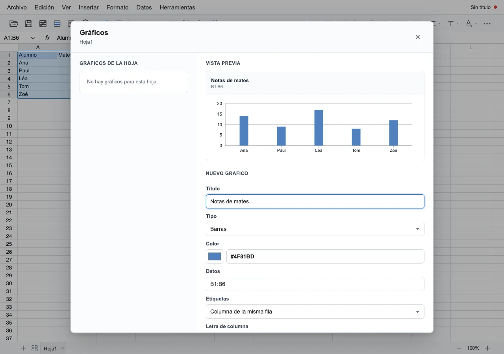
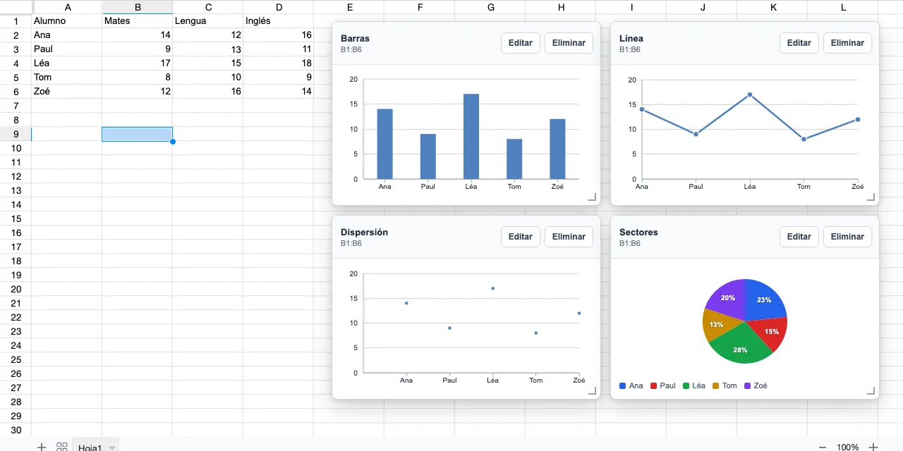
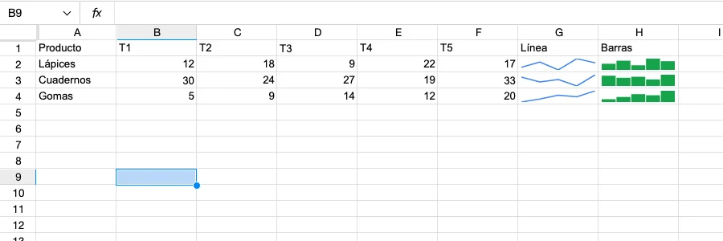

Gráficos y minigráficos
Crear un gráfico
- Seleccionar los datos.
- o Insertar › Insertar gráfico.
- Elegir el tipo y las opciones; la vista previa sigue.
- Agregar, luego Cerrar.

| Selección | Interpretación |
|---|---|
| una columna o una fila de números | los datos |
| dos columnas | etiquetas en la primera, datos en la segunda |
| dos filas | etiquetas en la primera, datos en la segunda |
| dos columnas separadas, elegidas con Ctrl | igual |
Un gráfico muestra una serie: una fila o una columna de datos. Las celdas sin número, como un encabezado, se ignoran.
Tipos
| Tipo | Para | Etiquetas |
|---|---|---|
| Barras | comparar | bajo las barras |
| Línea | una evolución | en el eje horizontal |
| Dispersión | una relación entre dos magnitudes | son las abscisas, si son números; si no, 1, 2, 3… |
| Sectores | partes; valores positivos | en la leyenda o sobre los sectores |
Hasta 120 valores, 24 para los sectores.

Opciones
| Campo | Contenido |
|---|---|
| Título | obligatorio; se muestra arriba del gráfico |
| Color | selector o código #4F81BD; los sectores tienen sus propios colores |
| Datos | el rango: B2:B6 |
| Etiquetas | Sin etiquetas; Columna de la misma fila (A); Fila de las mismas columnas (1); Rango personalizado, del mismo tamaño que los datos |
| Visualización | valores, leyenda, abscisas, ordenadas, cuadrícula |
Mover, modificar
- Arrastrar la franja del título mueve el gráfico; arrastrar su esquina inferior derecha cambia su tamaño.
- Editar vuelve a abrir la ventana, Eliminar lo elimina. La ventana lista también todos los gráficos de la hoja.
- El gráfico sigue los datos de sus celdas.
Los gráficos se guardan en el archivo de Excel como verdaderos gráficos, y DocCells los vuelve a leer. No se imprimen con la hoja.
Minigráficos
La función SPARKLINE dibuja un gráfico en miniatura en la celda.
=SPARKLINE(B2:F2)
=SPARKLINE(B2:F2; {"charttype"\"column"})
=SPARKLINE(B2:F2; {"charttype"\"line"; "color"\"#dc2626"; "linewidth"\2})
=SPARKLINE(B2:F2; {"charttype"\"bar"; "max"\100})
Las opciones se escriben entre llaves: el nombre, una barra invertida, el valor; un punto y coma entre dos opciones.
charttype | Dibujo | Opciones propias |
|---|---|---|
"line" (por defecto) | línea | color, linewidth, xmin, xmax, ymin, ymax |
"bar" | barras apiladas | max, color1, color2 |
"column" | columnas | color, negcolor, lowcolor, highcolor, firstcolor, lastcolor, axis, axiscolor, ymin, ymax |
"winloss" | ganancias y pérdidas | las mismas, sin ymin ni ymax |
Opciones comunes: empty ("zero" o "ignore"), nan ("convert" o "ignore"), rtl (de derecha a izquierda). La documentación de SPARKLINE da todos los valores, con ejemplos.
Para un dibujo mayor, agrandar la fila y la columna, o combinar celdas.